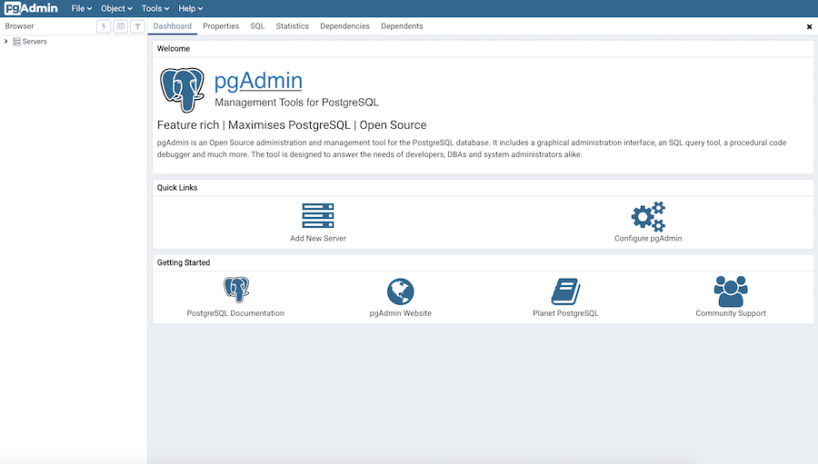

User Interface¶
pgAdmin 4 supports all PostgreSQL features, from writing simple SQL queries to developing complex databases. It is designed to query an active database (in real-time), allowing you to stay current with modifications and implementations.
Features of pgAdmin 4 include:
auto-detection and support for objects discovered at run-time
a live SQL Query Tool with direct data editing
support for administrative queries
a syntax-highlighting SQL editor
redesigned graphical interfaces
powerful management dialogs and tools for common tasks
responsive, context-sensitive behavior
supportive error messages
helpful hints
online help and information about using pgAdmin dialogs and tools.
When pgAdmin opens, the interface features a menu bar and a window divided into two panes: the Browser tree control in the left pane, and a tabbed browser in the right pane.
Select an icon from the Quick Links panel on the Dashboard tab to:
Click the Add New Server button to open the Create - Server dialog to add a new server definition.
Click the Configure pgAdmin button to open the Preferences dialog to customize your pgAdmin client.
Links in the Getting Started panel open a new browser tab that provide useful information for Postgres users:
Click the PostgreSQL Documentation link to navigate to the Documentation page for the PostgreSQL open-source project; once at the project site, you can review the manuals for the currently supported versions of the PostgreSQL server.
Click the pgAdmin Website link to navigate to the pgAdmin project website. The pgAdmin site features news about recent pgAdmin releases and other project information.
Click the Planet PostgreSQL link to navigate to the blog aggregator for Postgres related blogs.
Click the Community Support link to navigate to the Community page at the PostgreSQL open-source project site; this page provides information about obtaining support for PostgreSQL features.